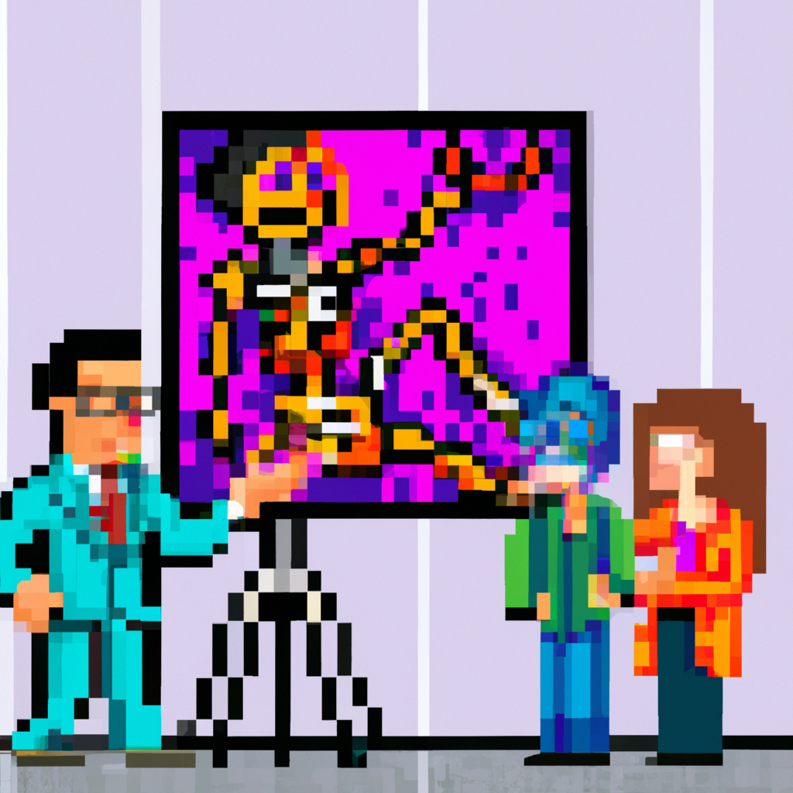

Why AI will never replace the radiologist
In recent years, artificial intelligence (AI) has been making advances in the medical field. It’s been used in radiology to detect diseases and abnormalities, and even to make diagnoses. However, experts agree that AI will never replace the radiologist. Here’s why.
First and foremost, AI cannot replace the human touch. An AI system cannot replicate the intuition, experience and communication skills of a radiologist. AI can detect anomalies, but it cannot accurately interpret them or think critically about them. It is a tool that can be used to assist radiologists, but it cannot replace them.
Second, AI can be biased. AI’s performance is dependent on the data it is fed. If the data it is given doesn’t accurately represent the population, the results can be inaccurate. Radiologists, on the other hand, are trained to be impartial and to interpret images objectively.
Finally, AI can’t make decisions like a human. AI cannot consider a patient’s entire medical history or family history when making a diagnosis. It cannot offer the same personalized care that a radiologist can. A radiologist can look at a patient’s full medical history, their symptoms, and other factors to make an accurate diagnosis.
Overall, AI will continue to play an important role in radiology. It can assist radiologists in detecting diseases and abnormalities. However, radiologists will always be necessary to provide the human touch and accurate diagnosis. AI can never replace the radiologist.